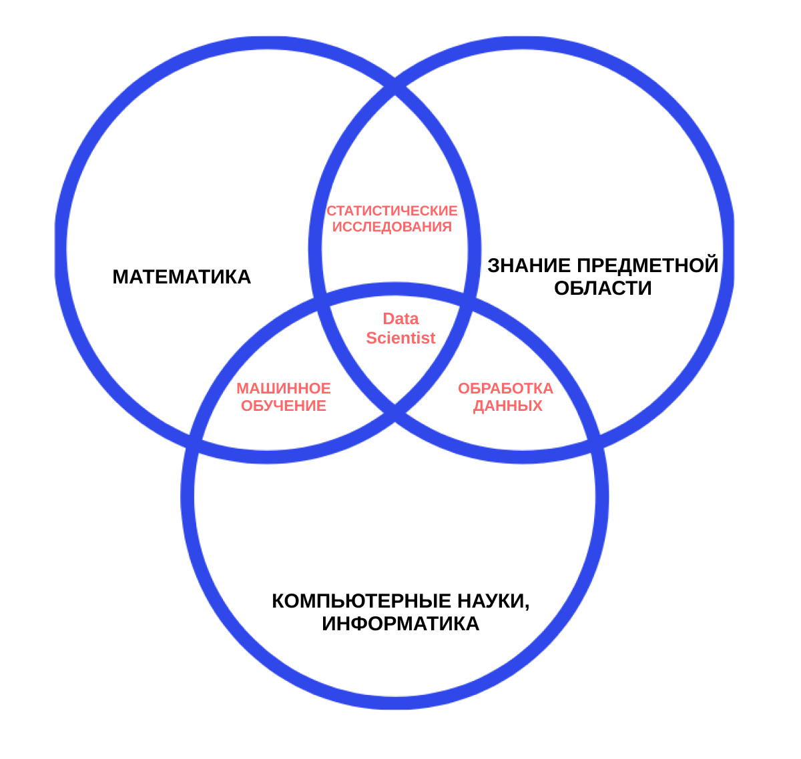

Data Science
Data Science — наука о данных и их анализе. Сфера охватывает сбор больших массивов структурированных и неструктурированных данных и преобразование их в человекочитаемый формат. Преобразование включает в себя визуализацию, работу со статистикой и аналитическими методами.
Специалисты по Data Science работают везде, где есть большие объемы информации: чаще всего это крупный бизнес, стартапы и научные организации. Поскольку методы работы с данными универсальны, специалистам открыты любые сферы.
Плюсы и минусы
профессии
Высокая
заработная плата
Востребованность

Стабильное
будущее профессии
Частично рутинная
работа
Частое отсутствие
готового решения
Высокая цена
ошибки
Кто такой Data Scientist?
Специалист по Data Science обрабатывает массивы данных, находит в них новые связи и закономерности, используя алгоритмы машинного обучения, и строит модели.
Знания и навыки, необходимые специалисту по Data Science
